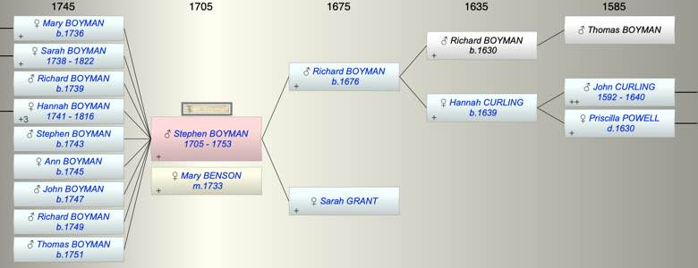

| [Index] |
| Stephen BOYMAN (1705 - 1753) |
|  |
| b. 1705 at St Peter, Thanet |
| m. 13 Aug 1733 Mary BENSON at Aylesford |
| d. 1753 aged 48 |
| Parents: |
| Richard BOYMAN (1676 - ) |
| Sarah GRANT |
| Siblings (4): |
| Richard BOYMAN (1703 - ) |
| Joshua BOYMAN (1712 - 1712) |
| Sarah BOYMAN (1713 - 1716) |
| Hannah BOYMAN (1718 - ) |
| Grandchildren (7): |
| Stephen HOLMAN (1759 - ), Mary HOLMAN (1761 - ), John HOLMAN (1764 - 1764), John Cooper HOLMAN (1765 - ), Francis HOLMAN (1768 - ), Ann HOLMAN (1769 - ), Nicholas HOLMAN (1773 - ) |
| Events in Stephen BOYMAN (1705 - 1753)'s life | |||||
| Date | Age | Event | Place | Notes | Src |
| 1705 | Stephen BOYMAN was born | St Peter, Thanet | Note 1 | ||
| 13 Aug 1733 | 28 | Married Mary BENSON | Aylesford | Note 2 | |
| 1736 | 31 | Birth of daughter Mary BOYMAN | St Lawrence | Note 3 | |
| 1738 | 33 | Birth of daughter Sarah BOYMAN | St Lawrence | Note 4 | |
| 1739 | 34 | Birth of son Richard BOYMAN | St Lawrence | Note 5 | |
| 1741 | 36 | Birth of daughter Hannah BOYMAN | St Lawrence | Note 6 | |
| 1743 | 38 | Birth of son Stephen BOYMAN | St Lawrence | Note 7 | |
| 1745 | 40 | Birth of daughter Ann BOYMAN | St Lawrence | Note 8 | |
| 1747 | 42 | Birth of son John BOYMAN | St Lawrence | Note 9 | |
| 1749 | 44 | Birth of son Richard BOYMAN | St Lawrence | Note 10 | |
| 1751 | 46 | Birth of son Thomas BOYMAN | St Lawrence | Note 11 | |
| 1753 | 48 | Stephen BOYMAN died | |||
| Personal Notes: |
|
Stephen Boyman left a will mariner of Ramsgate (ex Ancestry)
Sister Hannah Boyman Property in St Peters and Ramsgate Wife Mary Unnamed children George Curling was a witness Proved 1753 |
| Created on a Mac™ using iFamily for Mac™ on 8 Oct 2023 |